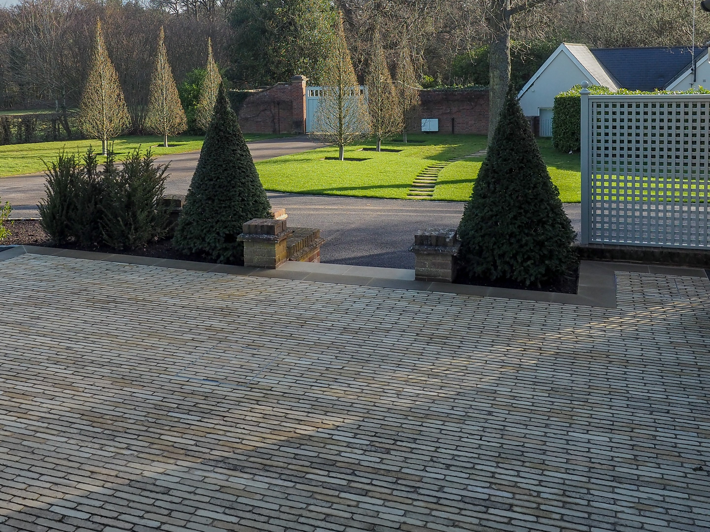

Blogs
Stay inspired with the latest trends, insights, and behind-the-scenes glimpses into the world of luxury landscaping.
Recent Articles
From expert planting advice to exclusive project showcases, our journal is a must-read for those who appreciate the beauty of fine landscaping. Explore more.